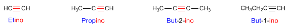
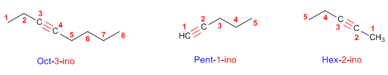
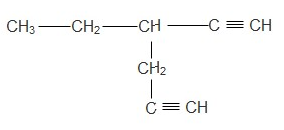

IES Valle del Alberche

📘 Presentación
Colección de problemas resueltos de formulación y nomenclatura de alquinos, según las reglas IUPAC.
Se abordan, de forma progresiva:
- El grupo funcional triple enlace carbono-carbono (C≡C) y la fórmula general CnH2n−2.
- Alquinos lineales y ramificados, con uno o varios triples enlaces (diinos, triinos…).
- Elección de la cadena principal que contenga el mayor número de enlaces múltiples.
- Numeración que otorga el localizador más bajo al triple enlace (con preferencia del doble sobre el triple en caso de empate).
- Compuestos mixtos con dobles y triples enlaces: terminaciones -eno-ino, -dieno-ino, -eno-diino…
- Paso inverso: escribir la fórmula estructural a partir del nombre.
🎯 Objetivo
- Reconocer el grupo funcional triple enlace C≡C y la fórmula general CnH2n−2.
- Seleccionar la cadena principal: la más larga que contenga el triple enlace; si hay varios enlaces múltiples, la que contenga el mayor número posible.
- Numerar la cadena de modo que el triple enlace reciba el localizador más bajo.
- Aplicar la terminación -ino (o -diino, -triino… según el número de triples enlaces).
- Nombrar correctamente compuestos mixtos con dobles y triples enlaces usando las terminaciones -eno-ino, -dieno-ino, -eno-diino…
- Aplicar la regla de preferencia del doble sobre el triple cuando ambos están a la misma distancia de los extremos.
- Escribir la fórmula estructural de un alquino a partir de su nombre IUPAC.
📚 Recordatorio teórico: reglas de nomenclatura Pulsame
🧪 ¿Qué es un alquino?
Los alquinos son hidrocarburos que contienen al menos un triple enlace carbono-carbono (C≡C). Responden a la fórmula molecular general CnH2n−2 (para alquinos con un solo triple enlace).
El alquino más sencillo es el etino (acetileno), HC≡CH, con n = 2.
📝 Nomenclatura de alquinos: 4 reglas básicas


- Se toma como cadena principal la que contiene al mayor número posible de enlaces múltiples, prescindiendo de si son dobles o triples.
- Se numera para que los enlaces en conjunto tomen los localizadores más bajos. Si hay un doble enlace y un triple a la misma distancia de los extremos, tiene preferencia el doble.
- Terminaciones:
- Un doble + un triple → -eno-ino.
- Dos dobles + un triple → -dieno-ino.
- Dos triples + un doble → -eno-diino.
🔬 Comparativa: alcanos, alquenos y alquinos
| Tipo | Grupo funcional | Fórmula general | Sufijo |
|---|---|---|---|
| Alcano | C–C (simple) | CnH2n+2 | -ano |
| Alqueno | C=C (doble) | CnH2n | -eno |
| Alquino | C≡C (triple) | CnH2n−2 | -ino |
🧪 PROBLEMAS RESUELTOS de alquinos Pulsame
Problema 1 Nombra el siguiente alquino

Solución
Nombre: 3-Etilhexa-1,3-diino
Problema 2 Nombra el siguiente alquino
Solución
Nombre: Prop-1-ino (propino)
Problema 3 Nombra el siguiente alquino lineal
Solución
Nombre: But-1-ino (1-butino)
Problema 4 Nombra el siguiente alquino con triple central
Solución
Nombre: Pent-2-ino (2-pentino)
Problema 5 Alquino ramificado: 3-metilbut-1-ino
Solución
Nombre: 3-Metilbut-1-ino (3-metil-1-butino)
Problema 6 Cadena principal de 5 carbonos con metilo
Solución
Nombre: 4-Metilpent-1-ino (4-metil-1-pentino)
Problema 7 Dos sustituyentes iguales: 3,3-dimetilbut-1-ino
Solución
Nombre: 3,3-Dimetilbut-1-ino (3,3-dimetil-1-butino)
Problema 8 A partir del nombre, escribe la fórmula
Solución
Problema 9 Dos triples enlaces: buta-1,3-diino
Solución
Nombre: Buta-1,3-diino (1,3-butadiino)
Problema 10 Diino interno: hexa-2,4-diino
Solución
Nombre: Hexa-2,4-diino (2,4-hexadiino)
Problema 11 A partir del nombre: penta-1,3-diino
Solución
Problema 12 Compuesto mixto: but-1-en-3-ino
Solución
Nombre: But-1-en-3-ino (but-1-en-3-ino)
Problema 13 Doble y triple separados: pent-1-en-4-ino
Solución
Nombre: Pent-1-en-4-ino (pent-1-en-4-ino)
Problema 14 Dos dobles + un triple: hexa-1,3-dien-5-ino
Solución
Nombre: Hexa-1,3-dien-5-ino (hexa-1,3-dien-5-ino)
Problema 15 A partir del nombre: pent-1-en-3-ino
Solución
Problema 16 Mixto con ramificación: 5-metilhex-1-en-3-ino
Solución
Nombre: 5-Metilhex-1-en-3-ino (5-metilhex-1-en-3-ino)
Problema 17 Dos sustituyentes distintos: etil y metil
Solución
Nombre: 3-Etil-4-metilpent-1-ino (3-etil-4-metil-1-pentino)
Problema 18 Diino con ramificación: 3-metilpenta-1,4-diino
Solución
Nombre: 3-Metilpenta-1,4-diino (3-metilpenta-1,4-diino)
Problema 19 Triple interno con dos ramificaciones
Solución
Nombre: 2,5-Dimetilhex-3-ino (2,5-dimetilhex-3-ino)
Problema 20 A partir del nombre: 5-metilhex-1-en-3-ino
Solución
- La cadena principal es la más larga que contenga el triple enlace; si hay varios enlaces múltiples, la que tenga el mayor número posible.
- Se numera por el extremo que dé a los enlaces múltiples el conjunto de localizadores más bajo.
- El nombre termina en -ino, -diino, -triino… según el número de triples enlaces.
- En compuestos mixtos (dobles + triples): terminaciones -eno-ino, -dieno-ino, -eno-diino…
- Si un doble y un triple están a la misma distancia de los extremos, la numeración otorga el localizador más bajo al doble enlace (tiene preferencia).
- Puntuación: los números se separan de las letras con guiones, los localizadores entre sí con comas y nunca se dejan espacios.